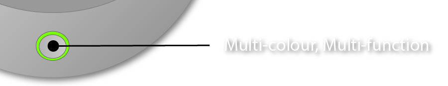

Products
Products | SmartPet-20 Safety Device
Imagine no longer having to guess how your pets are feeling or how their general health/well-being is affecting them on any given day only to have them respond with that blank stare and wagging tail or purring that gives nothing away but how happy they are now you're finally back to feed them. again.
Let's not pretend there's any more than base dependence going on with any pet and you know you're really better off losing them if you can, but since you're here you obviously have a neurotic desire to feel needed by small creatures you have control over and godamn do we have the product for you!
With this little gem, your pets will have no hope of ever escaping!
The SmartPet-20 Animal Safety Device
It's long been known that animals are quite adept at hiding illness with a natural fear of being cast out of their social group or pack having been identified as the useless, opportunistic leeches they really are and we rarely see a pet behave in a way that betrays any negative impact on their health until that animal is so critically ill it can no longer act and by this point it's usually too late to do anything about it - bang, dead pet.

The SmartPet-20 is an innovation in animal care, bringing animals and humans closer than ever before while closing the communication gap using technology that gives owners knowledge and detailed information about their animals through a combination of hardware sensors that tell you how your creature is feeling with detailed statistical analysis of health stats and activity levels.
It would've done a whole lot more than that, but everyone pussied out of being innovative and retreated to reading endless, bland articles about other peoples inventions then huddled together to regurgitate all those other peoples ideas back up into a document that's like a 15,000 word sleeping pill - all while leaving me to imagine, create and prototype the device myself.
How does it work?
Magic and unicorn dust?
The most up to date sensors many of us wear on our wrists every day to monitor pulse, step-count and stress levels were just the starting-point in creating our device: we have taken the standard hardware included in most market-leading smart-watches today, beefed it up and stuffed it into a beautiful design with the following features:
Features
From security and tracking to health and fitness, training games, virtual fence-lines and proximity alarms, the feature-set of the SmartPet-20 is almost too large to list in a single page and with future development planned to continually update, upgrade and add new modules that will expand the functionality of our pet wearable the list below truly represents only the most important, practical features which are only a fraction of what we have earmarked for development.
Location Tracking & Online Connectivity
With Glonass GPS chipset and LTE cellular network connectivity as standard in the SmartPet-20, you're pet can be tracked and located in a variety of ways, creating a truly versatile and safe way of keeping the whereabouts of your needy creature known to you no matter where you or that creature happen to be..
- Glonass Satellite Tracking
With support for the most advanced GPS chipset on the market, our device accesses over a dozen satellites simultaneously, giving you twice the accuracy of standard tracking chipsets (with their poultry six satellites) to facilitate your animal being successfully located to an accuracy of up to 15m.
- LTE 3G/4G/5G Connectivity
You love your pets and want the ultimate in retrievability in the event they escape, which is why your SmartPet-20 comes with it's own on-board SIM card that allows cell towers, our cloud and your phone to be pinged once every minute anytime your animal is out of home wifi range, so you will be updated with GPS co-ordinates delivered to you every minute until your dog or cat is found.
- Designated Wifi Safety Zones
You don't need to be worrying about your pet's location when they're safe at home with you, so whenever the SmartPet-20 is within range of any white-listed wifi networks you designate, GPS tracking is automatically suspended in sleep-mode.
- Virtual Fencelines
Our Virtual Fencelines feature lets you draw a series of lines around your property in google maps then set and forget: your device will now alert you anytime your animal crosses any of those lines. Virtual Fencelines work independently of Wifi Safety Zones so your pet doesn't need to be out of wifi range to trigger a fenceline alert.
- GPS Proximity Alerts
Whether for training, security or any other reason you might need it, simply drop a pin in Google Maps and set a radius you'd like the device to trigger and it will, anytime your animal enters that area.
Health & Well-being
Mmm what have we got here..
- Heartrate and Blood Oxygen monitor
Sometime between now and Sunday I'll have to have a look and see what kind of sensor we changed to, because I know it's not PPG anymore because we conducted our own ultra-low-budget research by testing a PPG sensor on Joanne's cat and it failed to read a pulse, and we should've shaved the cat.
- Digital Thermometer
...
- Training Aid
...
- Fitness Games
...
Flawless Cloud Integration
Blabla
- Continual Syncing & Backup
Every stat, every step, every journey and walk - everything contained on your SmartPet-20 is continually synced to our cloud servers so you never need to worry about losing a single record of anything you and your pet have done and means the chore of remembering to back your device is something you never need to worry about - we have all your data covered.
- !!!
!!!
Functionality
Of the variety of ways you can control your SmartPet-20, the 1" touchscreen handles most detailed user interactions while the compound button at the base is bordered by an LED indicator that tells you the current status of your pet's new wearable.

The multi-function button/indicator is used for fundamental system-level control of your SmartPet-20: by pressing a variety of times or holding the button a set number of seconds you can do everything from powering the device up or down, lock and unlock the screen, set proximity alarm mode on or off and activate/deavtivate continuous LTE tracking among other functions, while the colour of the LED will confirm which mode the device is currently set to.
....
....
....
....
Of course our app for mobile devices is available from both the apple and android stores as well as a more fully-featured suite of tools for Windows, Mac and we have not forgotten about Linux users.
Specifications
....

Hardware:
- CPU: Cortex A-78
- Storage: 4Gb EPR/Flash
- Memory: 8GB DDR
- Battery: 1,800mAh lithium-ion Rechargable
- Wifi adapter
- Bluetooth adapter
- Glonass GPS chipset
- Digital Gyroscope/Accellerometer
- (Whichever Sensor we ended-up with for Heart-rate etcetera)
- USB-C charge & transfer port
- Microphone
- Corning Gorilla-glass 1" Touchscreen
- IP68 Waterproof & Military-grade shockproofing
- LTE 3G/4G/5G SIM
Software:
- SmartPet-OS (Custom linux kernel)